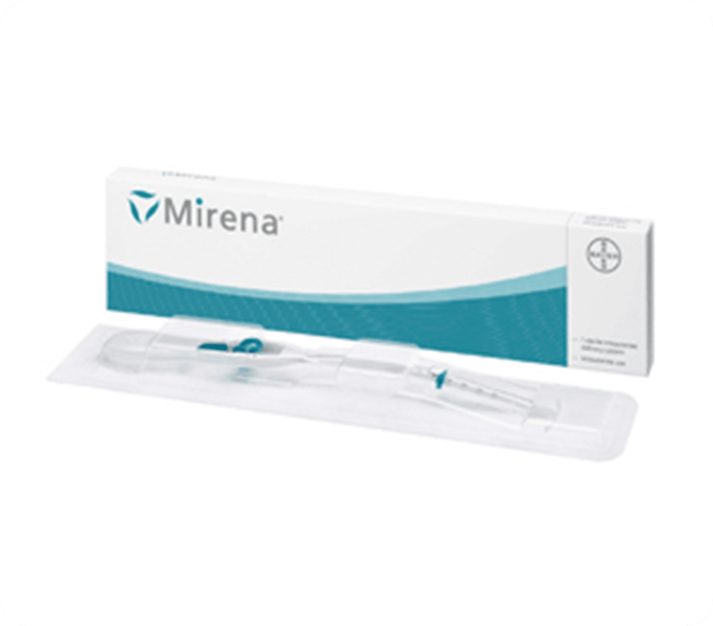
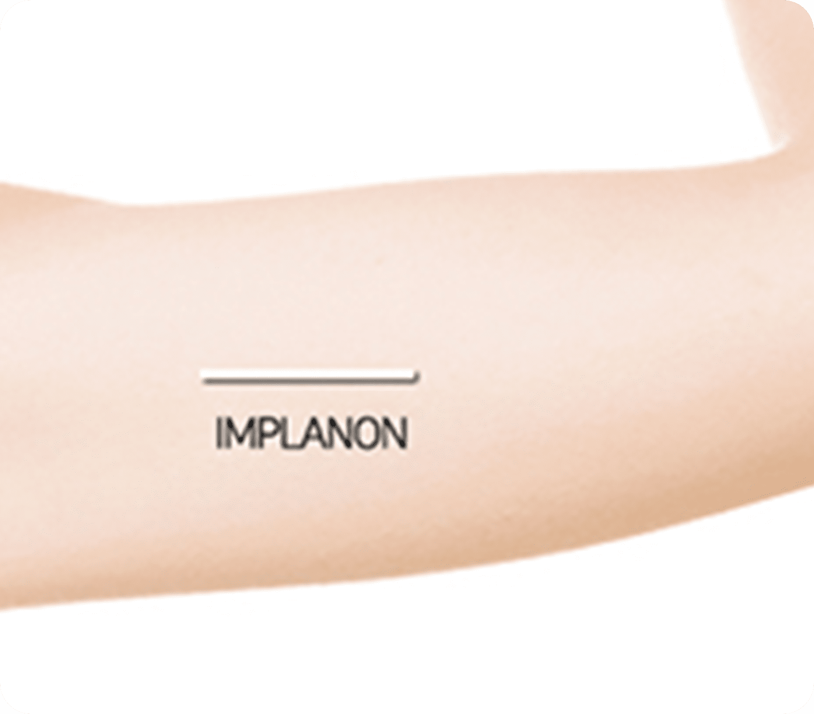
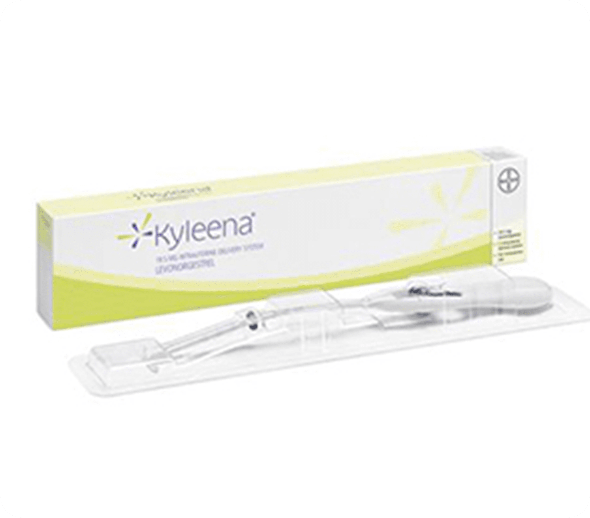
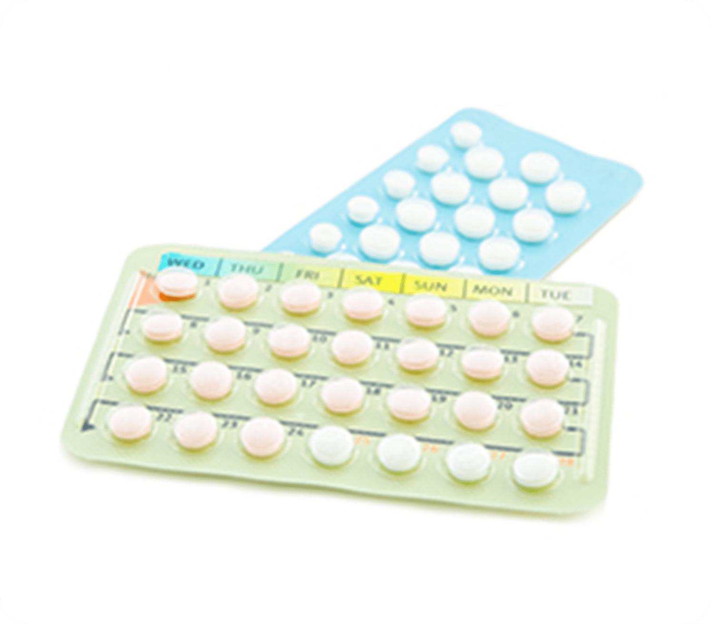

나를 위한
피임 클리닉
자신에게 적합한 피임법을
선택하고 올바르게 유지하는 것이 중요합니다
여성들의 활발한 사회 진출과 성생활이 점점 개방적으로 되어가는
만큼 피임에 대한 요구와 의식변화도 커지고 있습니다
피임법은 종류가 다양하며 각 피임법마다 장단점이 있고,
100% 안전하고 부작용이 없는 피임법은 아직 없지만,
원하지 않는 임신을 예방하기 위해선 부작용, 피임 실패율, 비용
등을 고려하여 나에게 맞는 피임법을 선택하셔야 합니다
올바른 피임 에 대해서
예방하기 위한 여러 방법을 말합니다.
사랑하는 사람과 즐거움을 나누고 싶지만
경제적 여건이나
마음의 준비가 되지 않았다면
임신 전 피임은 중요할 수밖에 없습니다.
원하지 않는 임신을 미리 예방하고
여성의 건강을 최우선으로 하여
본인에게 가장 적합한
피임 방법을 선택 및 권유해 드리고 있습니다.
다양한
피임 방법 종류
-
01.미레나

미레나는 기존의 루프와 비슷하지만 기구 안에
황체호르몬이 들어 있어
자궁 내막에 대해
국소적으로 작용하므로 전신 부작용이 적습니다.
매일 일정량의 호르몬을 분비시켜 자궁내막을 얇게 만들어
수정란이 착상하는 것을 막는
피임효과뿐만 아니라
생리량이 줄어들고 생리 기간도 줄어 월경 과다증이나
생리통이 심한 여성의 경우에는 치료 목적으로 사용하기도 합니다.
장기간 (5년 효과) 피임을 원하시는 분에게 적합하며
에스트로겐을 함유하지 않아
수유부에게도 적합하고
시술 후 3-6개월 동안은 부정출혈을 경험하기도 하는데
1년 정도
지나면 생리를 하지 않거나 양이 줄어드는 경우가 있을 수 있습니다.
제거는 언제든지 가능하며 시술은 생리 직후 가 가장 적합합니다.
다만 피임 효과가 높은 반면에 가격이 비싸다는 단점이 있습니다. -
02.임플라논

임플라논 피임은 작은 성냥개비 모양의 이식형 피임제제로
상박부 안쪽,
피부 바로 밑에 이식되어
장기간 피임 효과를 유지하게 됩니다.
임플라논에서 매일 극소량의 황체 호르몬이 배출되어
매월 여성의 배란을 억제하고,
자궁 입구에서 나오는
점액의 농도를 짙게 하여 정자의 진행을 방해하며,
수정란이 자궁 내막에 착상하는 과정을 방해하고, 착상 전후 시기
황체 호르몬의 지원을 억제시켜
1년간 피임 실패율이
1퍼센트 미만으로 피임 효과는 좋습니다. -
03.카일리나

자궁 내 장치 루프 종류 중 카일리나는 5년간 피임에 사용될 수 있는
자궁 내 삽입 시스템(IUS) 중
작아진 크기와 적은 일일 평균 호르몬
방출량으로 5년 동안 장기 피임 효과를 기대할 수 있습니다.
크기는 기존의 자궁 내 장치 루프 종류 보다
작고 삽입 튜브도 좁아졌으며,
18세부터 35세까지의
여성 2885명을 대상으로 한 3상 임상 연구에서
카일리나를 삽입한
1452명의 여성에서 5년 사용 시
99% 이상의 높은 피임 효과를 보였습니다.
그뿐만 아니라 카일리아는 생리통 완화에도 효과가 나타났으며,
살이 찌는 부작용을 최소화 하고,
피임을 하던 도중
임신을 원하는 경우, 제거한 뒤 가임력이 정상으로 돌아올 수 있습니다. -
04.사후 피임약

사후 피임약은 무방비 성교 후에 말 그대로 응급상황에서
임신을 예방하기 위해 일시적으로 복용하는 약입니다.
사후 피임약의 효과는 24시간 이내 복용하면
피임효과가 95%로 효과는 아주 좋은 편입니다.
48시간 이내 복용할 경우 85%, 72시간 이내에 복용할 경우 67%로
피임효과는 점점 떨어집니다.
즉, 사후 피임약을 먹어도
임신이 그대로 지속될 수 있으므로 월경 예정일에서 1~2주 지나도
월경이 없을 경우에는 꼭 임신 여부를 확인하여야 합니다.
단 100% 피임이 되는 것은 아니며, 시간이 지나면
효과가 떨어져 임신 가능성이 높아집니다.
사후 피임약은 전문의약품으로 의사 처방이 꼭 필요합니다.